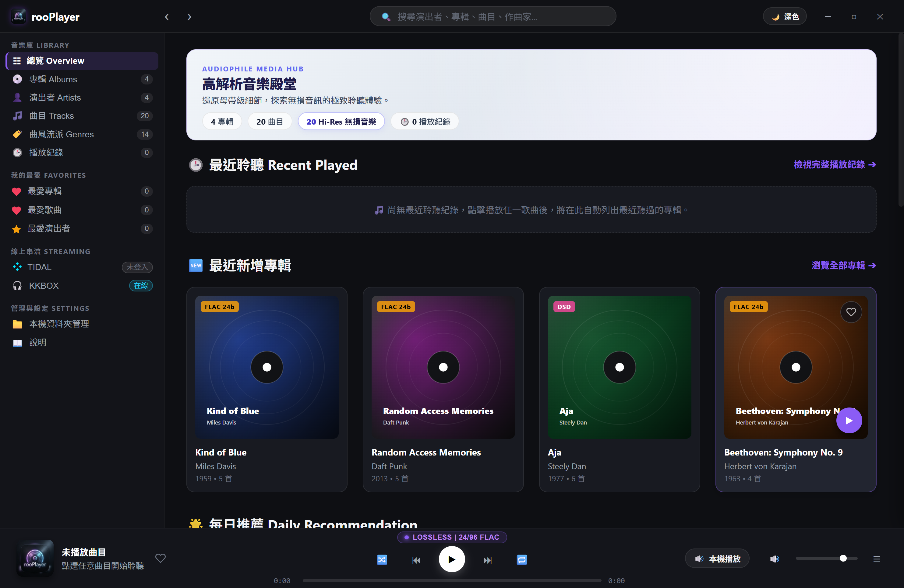
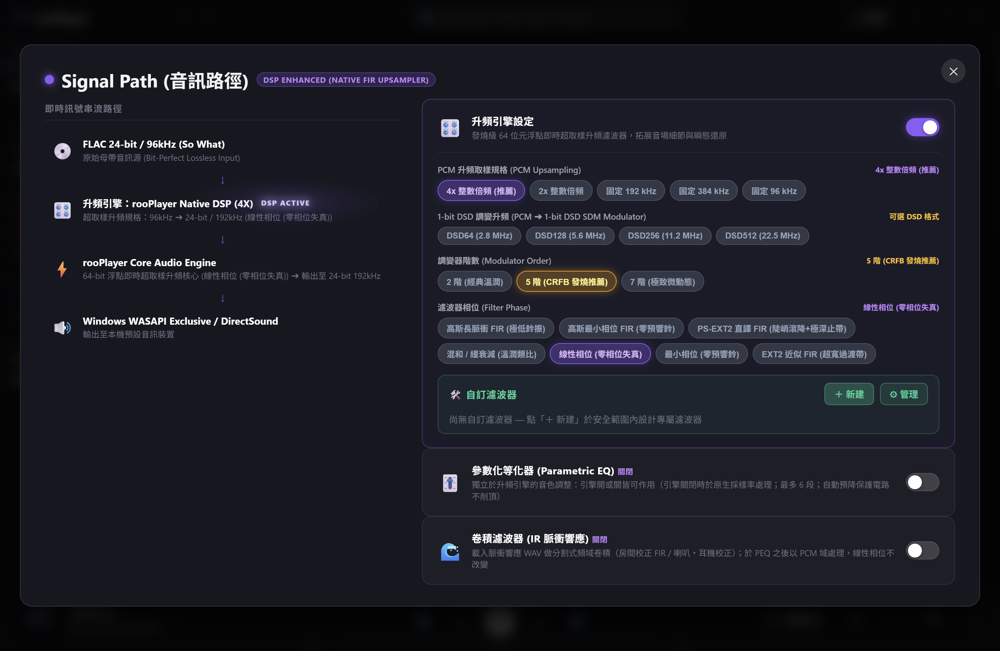
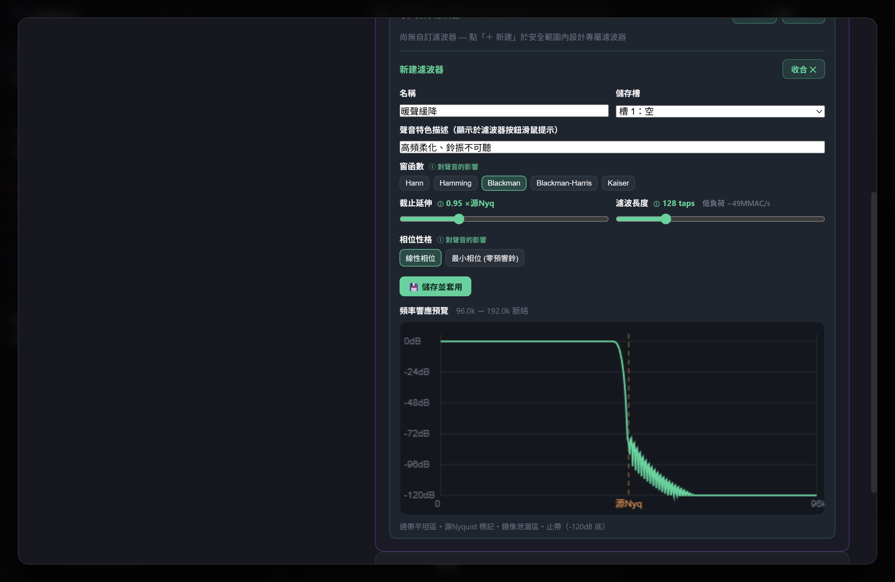
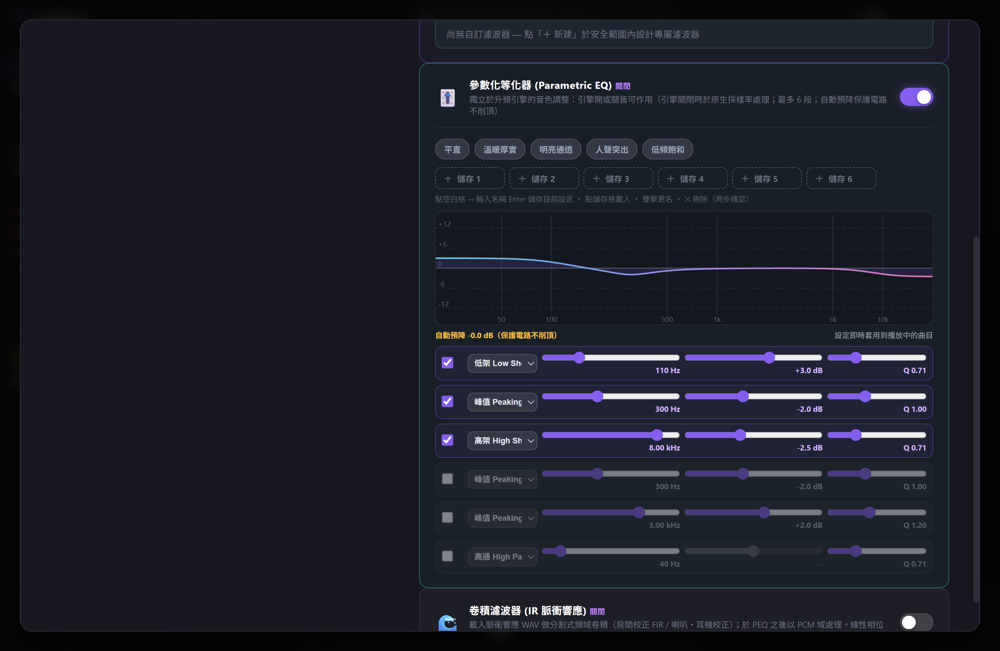
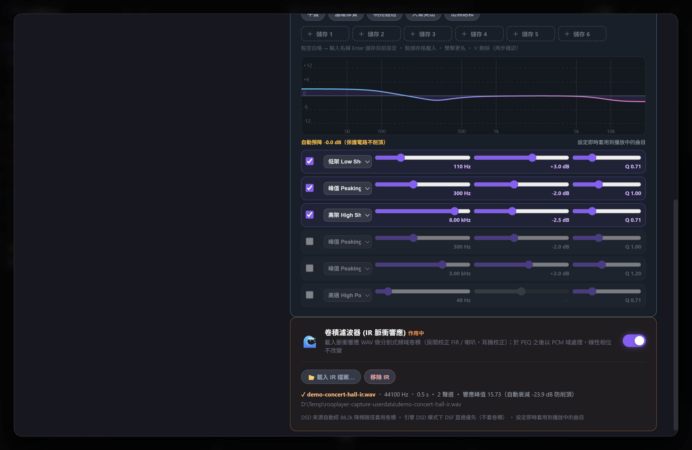
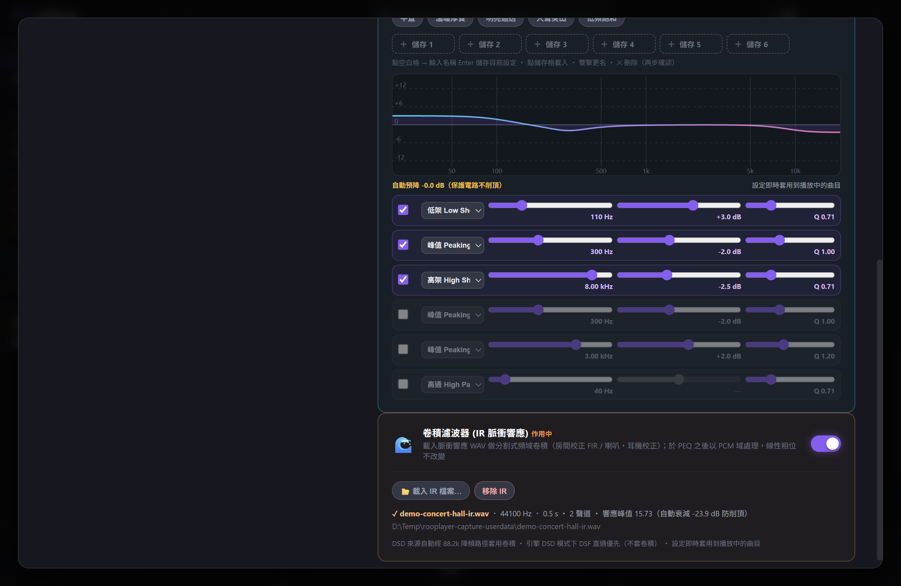

從取樣率轉換到 1-bit DSD 調變，全部在自研的純 JavaScript 引擎內以 64-bit 浮點完成——沒有原生附加模組、沒有取樣率轉換的黑箱。
自研 DSP 核心以 Float64Array 做 64-bit 精度運算：多相 FIR、子樣本內插、1-bit ΔΣ 調變。無原生依賴、跨平台、可驗證——每一條訊號路徑都是可讀的原始碼。
Float64零原生模組PCM 升頻至 2×/4×/384k 或原生 DSD。線性相位、最小相位、Hermite 內插、高斯脈衝、EXT2 與 PS-EXT2 濾波器，各自的聲音性格在介面上都有明確描述。
線性／最小相位DSD64–512在 filter-plugins/ 放一個描述卡檔案，引擎、設定頁按鈕、DLNA 與播放路徑全部自動支援——同名插件可覆寫內建設計做實驗，損毀檔案自動跳過。
drop-in 架構UI 自動生成不寫程式也能設計專屬濾波器：窗函數、截止延伸、濾波長度、相位性格全部在安全範圍內滑動調整，右側即時顯示頻率響應預覽。六個命名儲存槽，純參數儲存、引擎端二次驗證。
即時響應預覽安全夾限六段參數化 EQ：峰／谷、低架／高架、 shelving 與通過濾波，播放中即時套用；內建暖聲／明亮／人聲／低音四種預設，並提供命名儲存槽一鍵載入。
播放中即時套用自動預降防削頂載入 16/24/32-bit WAV 脈衝響應檔案，以卷積重現音樂廳、經典硬體與效果器的空間特性；自動分析聲道與響應峰值，單聲道 IR 自動套用左右聲道。
IR 卷積峰值自動衰減把 rooPlayer 作為串流伺服器，推送音樂到 Eversolo、LG 電視等 DLNA 渲染器——支援原生 1-bit DSD 直通輸出。
1-bit DSD 直通TIDAL 與 KKBOX 帳號整合：Hi-Res MAX 母帶直接播放，或一鍵「加入曲庫」與本機檔案融為一體管理；線上專輯自動補齊演出者與發行清單，跨庫聯合檢索一次完成。
TIDAL · KKBOX加入曲庫混合管理首頁隨機推薦一位音樂家：自動擷取維基百科生平、翻譯為繁體中文、附上照片與曲庫內關聯專輯；一鍵進入演出者主頁或播放其全部收藏。
自動生平＋翻譯關聯名盤推薦專輯／演出者／曲風三維分類、可調式表格欄、最愛系統、播放歷史統計、啟動時還原最後播放歌曲。
發燒友級元資料每一首歌的完整處理鏈以圖示呈現：來源取樣率 → 升頻引擎與濾波器 → PEQ → 卷積 → 輸出裝置。所有引擎參數在同一個視窗內完成。


參數化等化器與脈衝響應卷積直接嵌在訊號路徑視窗內：播放中即時套用、自動預降保護電路、與升頻引擎自由串接。


TIDAL Hi-Res 專輯可一鍵加入本機曲庫，與硬碟檔案在同一個庫裡共同管理——首頁「最近新增專輯」混合呈現兩種來源；「藝人生活誌」則從您的曲庫中隨機選一位音樂家，自動帶出生平簡介、照片與關聯名盤。

需要 Windows 10 以上與 Node.js（含 Electron）：
git clone https://github.com/tzungli/rooPlayer.git
cd rooplayer
npm install
npm start
首次啟動若無音樂庫，會以內建示範專輯展示完整介面。新增濾波器：在 filter-plugins/ 放一個插件檔案，或直接在設定頁的「🛠️ 自訂濾波器」工具箱設計。